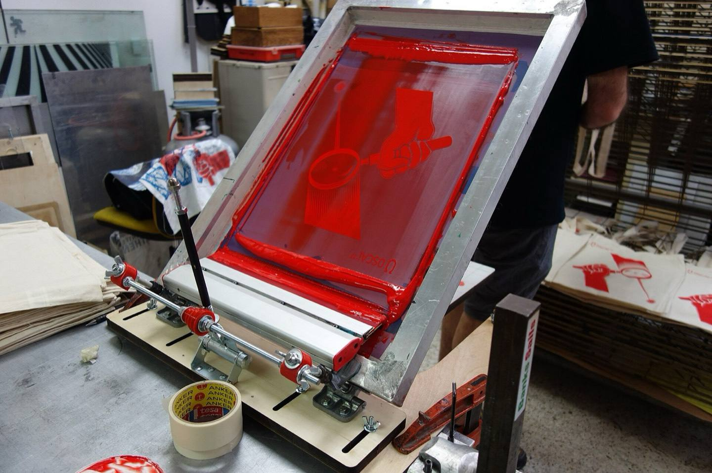
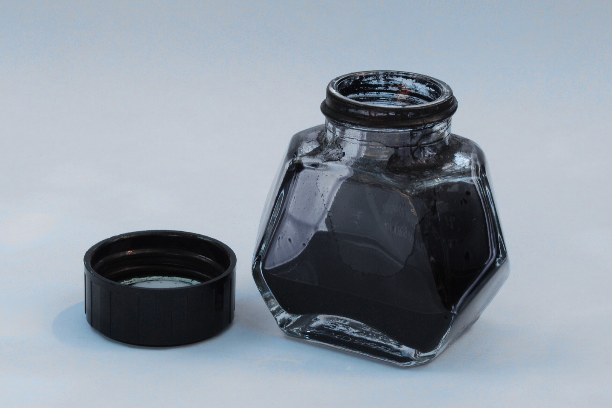
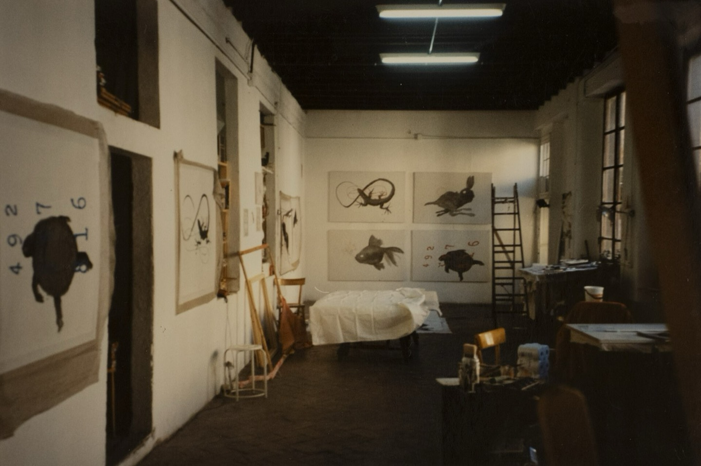
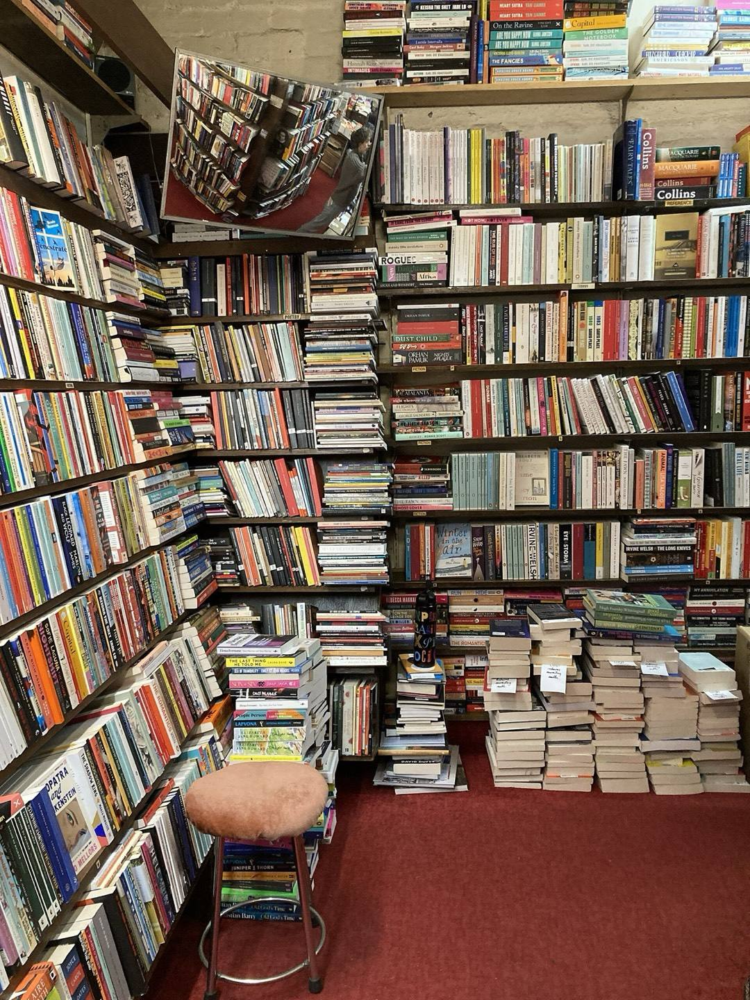
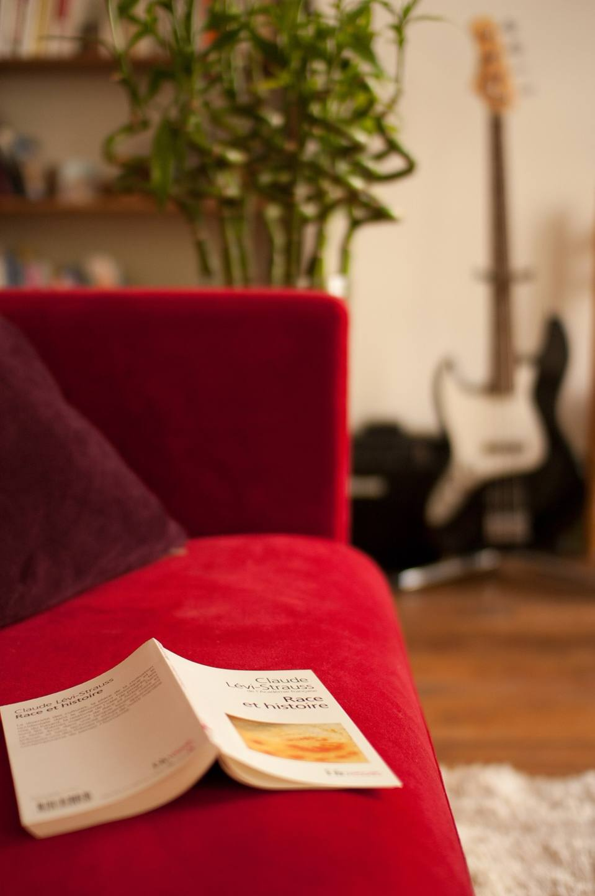

Two colours, a hair off register.
A risograph studio in Leith: two-colour prints from 40p a sheet.

One drum for each colour
Blue goes down first. Pink follows, a hair off.

Open studio days
The door is open and the drums are running.
Next open day: date to be announced
Find the studio
Two colours from 40p a sheet.
Send the artwork as two layers, blue and pink, and say how many sheets.
Price a print runZines on Sundays
Every Sunday the zine table comes out at the studio.

